北疆喀纳斯徒步丨 经典环线穿越 团队极致体验

各地-吐鲁木齐-喀纳斯-吐鲁木齐-各地
- 山地徒步
6天5夜
3.5小时
领略异样边疆美景 探索雪山神秘风情
徒步跋山涉水 锻炼坚强意志
团队同游北疆天地 共创旅途美好回忆

【产品亮点】
徜徉喀纳斯，看尽天堂的颜色;“家访”图瓦人，看最原始生活;千米枯木长堤,徒步绝美仙境；定格禾木，沐浴在“仙境”清晨。走进这朴质悠然的油画中，贪婪的品味这大自然最纯粹静雅的美，最艳丽多姿的色彩，最耐人寻觅的原始迷离。一路的极致体验，与你同享
徜徉喀纳斯，看尽天堂的颜色;“家访”图瓦人，看最原始生活;千米枯木长堤,徒步绝美仙境；定格禾木，沐浴在“仙境”清晨。走进这朴质悠然的油画中，贪婪的品味这大自然最纯粹静雅的美，最艳丽多姿的色彩，最耐人寻觅的原始迷离。一路的极致体验，与你同享

【行程亮点】
在中国版图的最西北角上，雪藏着一个“美丽而神秘”的地方，一个至美至纯的人间仙境，这就是喀纳斯。6月的喀纳斯刚刚进入春天，葱郁连绵的阿尔泰群山，奔流不息的额尔齐斯河，宁静而神秘的喀纳斯湖，无尽的草原、野花以及翠绿的森林，除此之外，这里更有边疆的别样生活，神秘的图瓦人，豪放的哈萨克人，住在童话般的小木屋中，白天驰骋在草原上，晚上喝着酒唱着歌围在木屋旁。
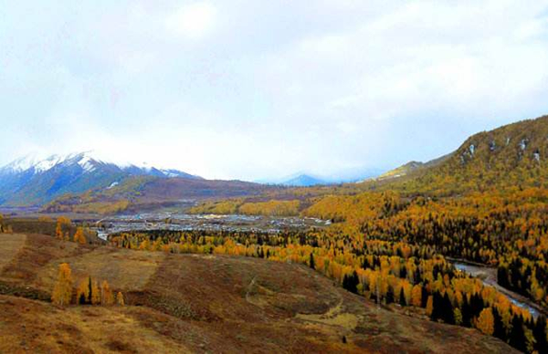
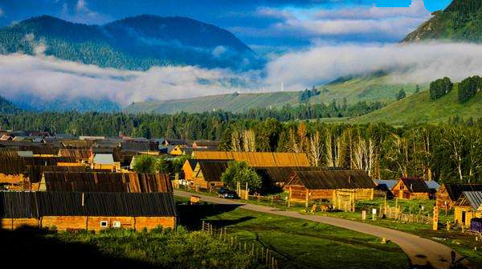

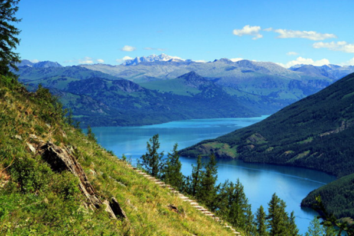
徒步路线：贾登峪－禾木－小黑湖—喀纳斯
徒步里程：76KM
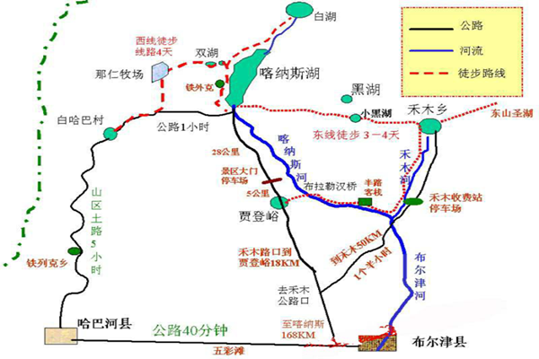
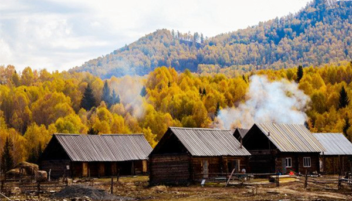
【行程安排】
DAY1：各地——乌鲁木齐
根据航班信息抵达乌鲁木齐，步行十分钟至酒店办理入住，晚餐后安排团建，分队取队名，领队讲解线路，户外徒步注意事项，急救知识培训。
入住酒店：新疆天缘酒店（五星级）
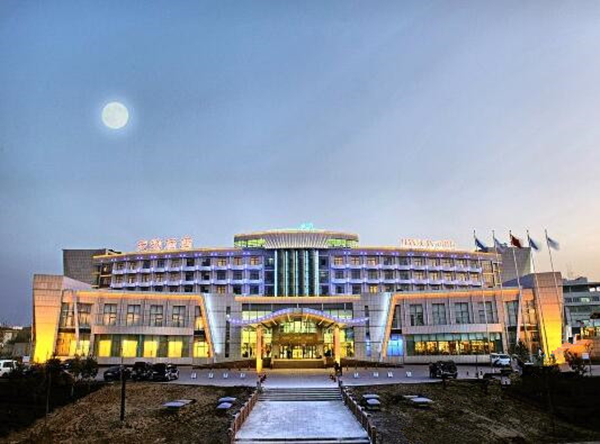
DAY2：乌鲁木齐——喀纳斯机场——贾登峪—喀纳斯河与禾木河交汇处（徒步6～8小时,行程20公里）早餐后航班前往喀纳斯（航程时间约50分钟），大巴车前往贾登峪（车程约1小时）
大约10点左右，我们抵达此次徒步起点贾登峪，跟随领队热身操后即可出发，翻过一道海拔1335米的山梁（约5公里处）,可以看到喀纳斯河谷的布拉勒汉木桥。该桥系当年俄罗斯人建筑，全部用原松木修建该桥全部用松木建成,虽年久欠修却牢固异常，桥下即为喀纳斯河。过布拉勒汉木桥后是曲折的山路,预示着艰难的行程，顺山势曲折的道路前进约10公里，就到了海拔1600米的喀纳斯河--禾木河交汇的三角洲，到达禾木河边的一处树林,林中有平整的草地,这里靠近河边，水源丰富，第一天在此处扎营。从河边至山顶林木如毡铺毯覆，浓密无缺，春夏浓绿如墨，喀河如玉带穿绕其间，美不胜收。从北流下的禾木河与喀河交汇处较为开阔，薄雾弥荡，赏心悦目。
住宿：草地扎营
用餐：中午路餐，晚上营地简餐
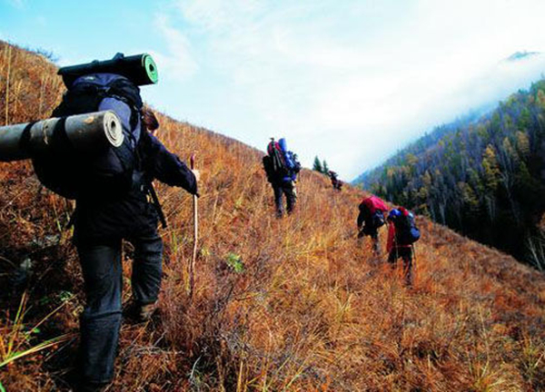
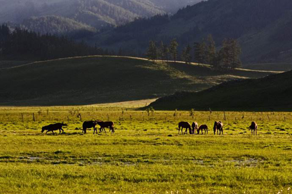
DAY3：喀纳斯河和禾木河的交汇处—禾木乡（徒步4～6小时,行程15公里）早餐后，从宿营地出发,路况较好,有些路段在灌木丛中穿行,注意提防刺伤或刮破衣物。北行15公里,便可从高坡上眺望远处的禾木乡。禾木乡是一个长约3公里、宽约l公里的山间盆地,禾木河沿盆地西缘流下,河西岸有连绵成片的桦林,盆地东缘山坡上则满布松林。盆地中央错落着原木搭成的木屋。禾木为蒙古自治乡,居民一半为蒙古族图瓦人,一半为哈萨克族,以牧业和旅游业为主，禾木基础设施健全,有政府、小学、医院和小商店等。
住宿：接近禾木村的白桦林处扎营
用餐：中午路餐，晚上禾木村简餐
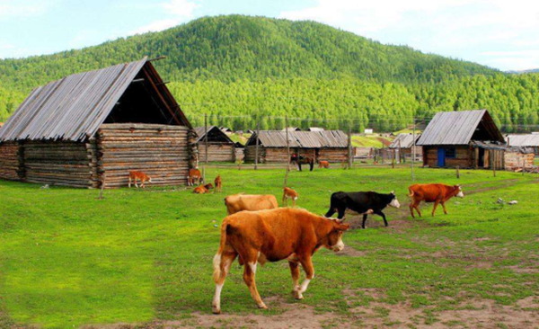
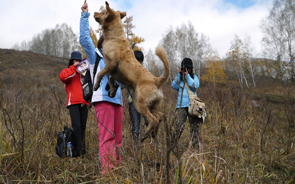
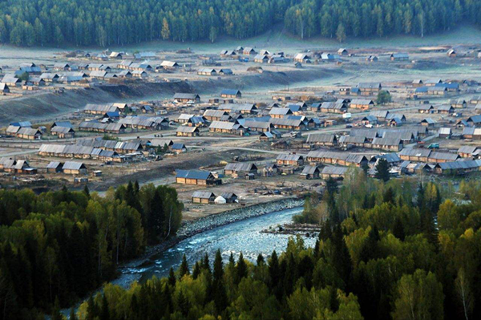
DAY4：禾木—小黑湖徒步（徒步8~10小时,行程20公里）
早起欣赏日出，看朝阳洒在当地小木屋的独特景观，早餐后，我们将继续“苦难的行军”前往小黑湖，通往小黑湖的路充满艰辛和挑战，也一路美景相随；海拔一路急剧上升，道路时而狭窄高陡时而开阔平缓，翻过一道松林密布的山梁后（大约14公里处）就到了行程的最高点——海拔2350米的达坂。继续前行，再翻过数个小坡及两个相对较高的达坂，精疲力尽后，眼前突然出现了无穷无尽的高山草原，草原上开满了鲜花，在这些草原的深处，有一个珍珠般的胡泊，那就是小黑湖，也是我们今天徒步的终点。
住宿：小黑湖营地露营
午餐：集体路餐，补充能量（干粮、榨菜、QQ肠、豆腐干、干果包、黄瓜、西红柿、功能饮料等）
晚餐：营地用餐或毡房点餐
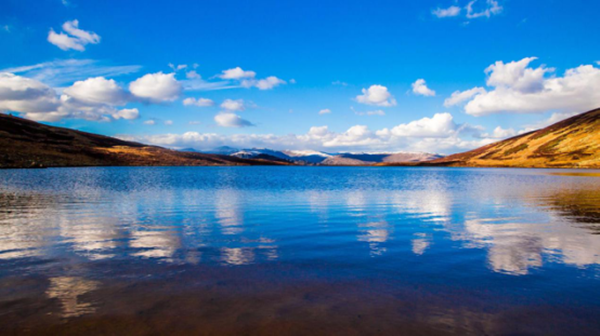
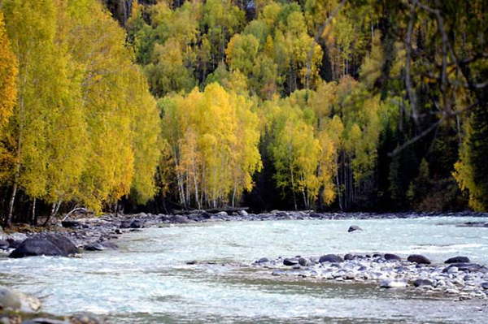
DAY5：小黑湖—喀纳斯（徒步8～10小时,行程21公里）在高山草原和煦的晨光中苏醒，早餐后从小黑湖向“神的后花园”喀纳斯开拔，沿途是青草如茵的高山草原，草原中有湛蓝的湖水，成群的牛羊，蓝天白云的倒影，我们一路翻山越岭，穿过浓密的原始森林后，前面豁然开朗，坡下喀纳斯湖畔山峰上的观鱼亭映入眼帘。喀纳斯湖形似月牙，在苍翠如黛的群山环抱中，湖面宁静柔美，宛如仙境。
徒步行程画上句号，回头凝望我们走来的路，一路上洒下的艰辛汗水，一路上留下的欢声笑语，一路上感受的真挚情谊，浓缩成马克华菲的企业文化，再一次书写我们的传奇历程！
住宿：喀纳斯山庄（四星），位于美丽神秘的喀纳斯湖畔，环境优雅、宁静。
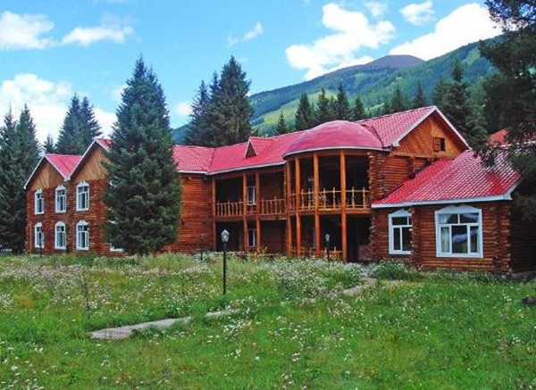
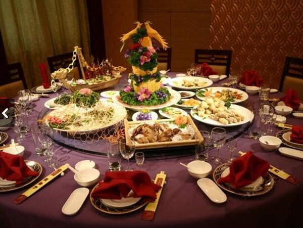
DAY6：喀纳斯——乌鲁木齐——各地
早餐后大巴车送至喀纳斯机场，到乌鲁木齐转机返程，结束愉快之旅

【温馨提醒】
1.天气：早晚温差大，春夏季一般温度在15-30度左右，需注意增减衣物；山里天气多变，时不时漂泊大雨，甚至是大雪和冰雹，需做好心理准备
2.徒步前做好准备（装备及个人身体），徒步过程中听从领队和向导的安排，严禁单独贸然行动；
3.所需装备：登山鞋、冲锋衣、抓绒衣、速干内衣、45L左右背包、水壶、充电宝、太阳镜、防晒霜
4.小黑湖营地提供不了电力，没有信号
5.关于安全:除了南疆部分地区，新疆是一个极安全的地方，尤其是北疆主要是哈萨克族，热情好客，比内地还要安全。
【费用说明】
1，参考价格是按照活动标配的物资及工作人员计算，团队定制时住宿及用餐标准自调
2，用餐均以桌数为单位计算。
3，团队活动统一购买户外运动高风险意外险
1.天气：早晚温差大，春夏季一般温度在15-30度左右，需注意增减衣物；山里天气多变，时不时漂泊大雨，甚至是大雪和冰雹，需做好心理准备
2.徒步前做好准备（装备及个人身体），徒步过程中听从领队和向导的安排，严禁单独贸然行动；
3.所需装备：登山鞋、冲锋衣、抓绒衣、速干内衣、45L左右背包、水壶、充电宝、太阳镜、防晒霜
4.小黑湖营地提供不了电力，没有信号
5.关于安全:除了南疆部分地区，新疆是一个极安全的地方，尤其是北疆主要是哈萨克族，热情好客，比内地还要安全。
【费用说明】
1，参考价格是按照活动标配的物资及工作人员计算，团队定制时住宿及用餐标准自调
2，用餐均以桌数为单位计算。
3，团队活动统一购买户外运动高风险意外险